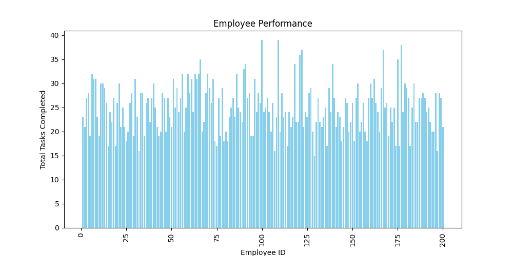
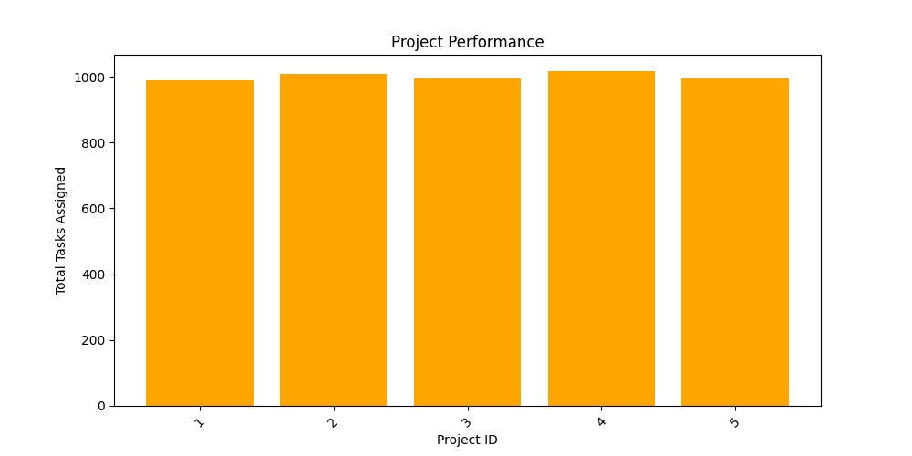

A Data Analysis Project for Understanding Employee and Team Productivity
This project analyzes employee performance based on tasks completed, time spent, and overall team efficiency.
Companies struggle to evaluate employee performance objectively. This project provides insights into productivity trends.
The dataset contains details about employees, projects, and tasks.
Extracted raw data from CSV files.
| Employee ID | Name | Department | Project ID | Hours Worked |
|---|---|---|---|---|
| 101 | John Doe | Sales | P001 | 40 |
| 102 | Jane Smith | IT | P002 | 35 |
Removed duplicates, handled missing values, and formatted columns.
| Employee ID | Name | Department | Project ID | Hours Worked |
|---|---|---|---|---|
| 101 | John Doe | Sales | P001 | 40 |
| 102 | Jane Smith | IT | P002 | 35 |
Visualized trends in employee performance.
Employee Performance Analysis
Key insights from the analysis:
| Metric | Top Performer | Best Team | Highest Workload Project |
|---|---|---|---|
| Efficiency Score | John Doe | IT Team | P002 |
Team Performance Analysis
Project Performance Analysis